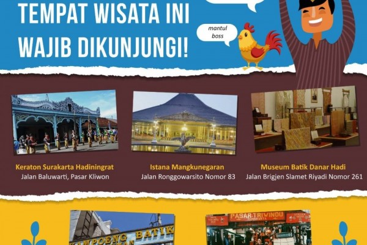

.png)


>tempat wisata ini ramai didatangi wisatawan dari dalam dan luar kota. Untuk dapat menyaksikan keindahan alam di sekitar air terjun Tawangmangu, pengunjung akan dikenai tiket masuk seharga kurang lebih Rp20.000 per orang.
untuk di sini tidak ada harga tiket masuk dan dibuka untuk umum.apalagi yang menyukai traveling sangat suka untuk menumpang berfoto dan melihat lihat di dalamnya.
Taman Sriwedari telah menjadi pusat hiburan, seni, dan budaya masyarakat Solo dan sekitarnya. Jika berniat mampir kemari, datanglah sekitar pukul 10.00 pagi sampai 22.00 malam. Harga tiketnya cukup murah, hanya sekitar Rp3.000 saja per orang.
baik sekadar untuk oleh-oleh khas Solo maupun dijual kembali. Harga batik di sini pun bervarias, mulai dari yang murah hanya dalam kisaran ratusan ribu sampai yang mahal hingga jutaan rupiah.
pengelolaan objek wisata belanja yang satu ini. Baru pada pemerintahan walikota Solo, Bapak Jokowi, pasar ini direnovasi dan ditata ulang sehingga menjadi apik seperti sekarang. karena ini pasar jadi kalian hanya untuk membeli dan melihat lihat barang barang antik disini
Di Pandawa Water World terdapat patung-patung besar Pandawa lima. Harga tiket masuk ke objek wisata ini adalah Rp80.000 pada hari biasa dan Rp100.000 per orang pada akhir pekan.
Dengan harga tiket yang tidak begitu mahal maka banyak wisatawan datang kesini untun berfoto foto dan berkreasi
Hanya dengan membayar tiket masuk seharga Rp8.000, Anda sudah bisa melihat aneka satwa di tempat wisata di Solo ini.
